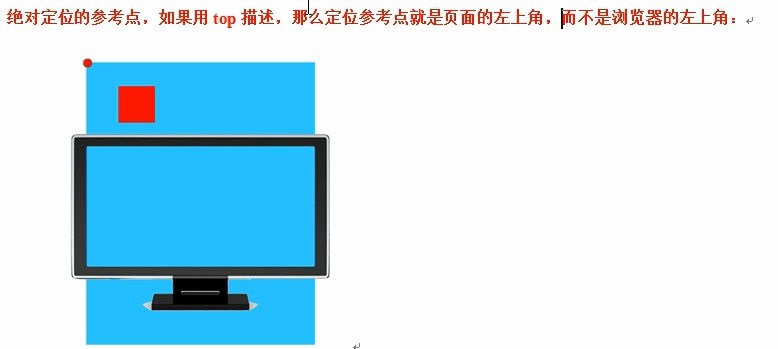
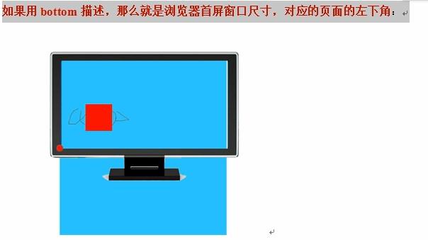
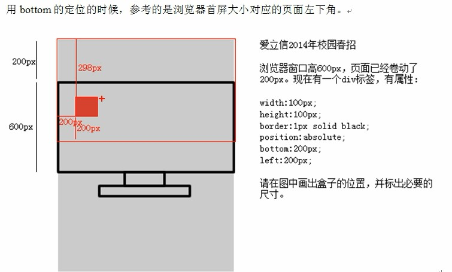

<!DOCTYPE html>
<html lang="en">

<head>
    <meta charset="UTF-8">
    <meta name="viewport" content="width=device-width, initial-scale=1.0">
    <title>Document</title>
</head>
<!-- 三种定位: 相对定位、绝对定位、固定定位 -->
<!-- 
    相对定位：position:relative 【不脱标】  
        1、相对于其正常位置【老家】进行定位。因此，"left:100px" 会向元素的LEFT位置添加100像素,即向右移动100px。
        2、不脱标，老家留坑，形影分离，真实物理位置还在老家(标准流位置)
        作用：  
            1、微调元素
            2、绝对定位的参考，子绝父相
            3、相对定位有坑，所以一般不做“压盖”效果。

    绝对定位：position:absolute 【脱标(脱离标准文档流)[标签不区分行内元素、块级元素]，后边的元素向前填充】
        -行内元素、块级元素只在标准文档流里适用，脱标后不适用，即行内元素(eg:span)也可以设置宽高了。
        绝对定位参考点：
            1、如果用top描述，那么定位的参考点就是页面的左上角，注意：不是浏览器的左上角；
                - 
            2、如果用bottom描述，那么就是浏览器首屏窗口尺寸，对应页面左下角(随着浏览器窗口的大小移动)。
                - 
                - 
    
    固定定位：position:fixed 【脱标】
        - 相对浏览器窗口定位，页面如何滚动，这个盒子显示的位置不变。
        
    静态定位：position:static 【约等于标准流】

    position：static/absolute/relative/fixed  不定位、绝对定位、相对定位、固定定位
    float：none/left/right   不浮动、左浮动、右浮动
 -->
<style type="text/css">
    * {
        margin: 0;
        padding: 0;
    }

    body {
        background-image: url(./img/bg.png);
        background-repeat: repeat-x;
        height: 800px;
    }

    span {
        /* 行内元素、块级元素只在标准文档流里适用，脱标后不适用，即行内元素(eg:span)也可以设置宽高了。 */
        position: absolute;
        bottom: 100px;
        left: 100px;
        width: 100px;
        height: 100px;
        background-color: pink;
    }
</style>

<body>
    <span></span>
</body>

</html>